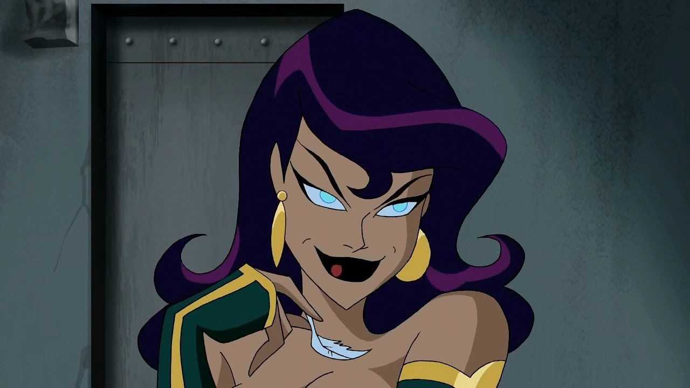

Biography
Wonder Woman, also known as Diana Prince, is an Amazonian warrior princess from the hidden island of Themyscira. She was sculpted from clay by her mother, Queen Hippolyta, and granted life by the gods of Olympus. Armed with magical weapons and equipped with unmatched combat skills, Diana fights for justice and peace, both on Earth and beyond.
Fun Facts
- Her Lasso of Truth forces anyone caught by it to tell the truth.
- Wonder Woman is a founding member of the Justice League and has often served as its ambassador.
- Thanks to her divine gifts, Wonder Woman can understand and speak all human languages.
Enemy List
Cheetah
A fierce rival with superhuman speed and strength.
Ares
The God of War who thrives on conflict and opposes Diana’s mission of peace.

Circe
A powerful sorceress who uses magic to challenge Wonder Woman.
Abilities
- Superhuman strength, speed, and agility
- Master of hand-to-hand combat and strategy
- Immortality (as an Amazonian)
- Magical weapons, including the Lasso of Truth and indestructible bracelets
- Flight (with the help of her invisible jet)
Important Relationships
- Steve Trevor – Steve Trevor is Wonder Woman's long-time love interest and an important figure in her journey. His experiences with Diana have helped shape both their lives and their shared mission for justice.
- Hippolyta – Queen Hippolyta, Wonder Woman's mother, plays an essential role in shaping Diana's values and her sense of justice. Their relationship is one of respect and love, with Hippolyta’s wisdom guiding Diana’s decisions.
- Donna Troy (Troia) – Donna Troy, once Wonder Woman’s sidekick, is her close ally and sometimes partner in battle. Donna represents the strength of the Amazons alongside Diana and has had her own hero’s journey.